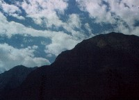
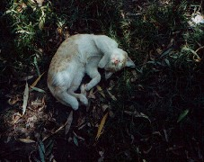
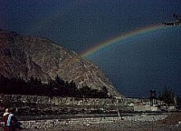
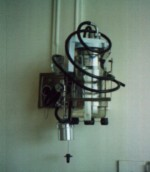

#ギルギット着。山の形が日本の山とは全然違うのにびっくり。
#ええと恐らく前日のスネークバーガーで食べたバーガーに当たる、大当たり。|
#宿屋の2階でダラダラしてたら、窓から何か今まで見たことも無いような色の濃い虹。 あんまり綺麗なんで、病院に行く以外の用事で久々に外。 「山のふもとまで行ったら、虹が降ってくるんじゃないかな？」とか思っちゃうくらいに綺麗な色で...なんか腹痛いのも、この時はあんまり気にならなくて。 何か吉兆じゃないかなー？なんて思って「きっと近いうちに腹痛も無くなって、フンザに移動できる」なんて勝手に確信していたんですけど.....結局その後.....(下に続く) |
 |

#手術3日目。少しだけ体力が回復してきたみたいで、自分でTVのチャンネル(ウルドゥー語ばかりで気が狂いそう)を変えることができるようになりました。